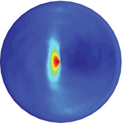

Egocentric spatial coding in the moving brain
We study how the brain represents space from the animal's own point of view — using in vivo electrophysiology and calcium imaging in freely moving rodents to map the circuits that transform perception into action.

From perception to action, in a single reference frame
The brain builds a map of the world, but behavior unfolds from the body outward. Our work traces how allocentric spatial memory is transformed into the egocentric signals that actually guide movement — spanning subiculum, retrosplenial, parietal, and cingulate cortex, and striatum.
Research
Egocentric coding and reference-frame transformation, boundaries and agency, foraging decisions, and social spatial coding.
See our research areas →People
Meet the graduate students, undergraduates, and alumni who drive the lab's electrophysiology, imaging, and behavior work.
Meet the team →Publications
Published and preprint work on egocentric boundary cells, foraging behavior, and spatial coding across cortical and striatal circuits.
Browse publications →We're looking for new lab members
Inquisitive, enthusiastic people at every career stage. We currently have openings for:
- Graduate students
- Lab technicians
- Postdoctoral fellows
If you're interested in joining the lab, email Dr. Hinman.
Email Dr. Hinman →